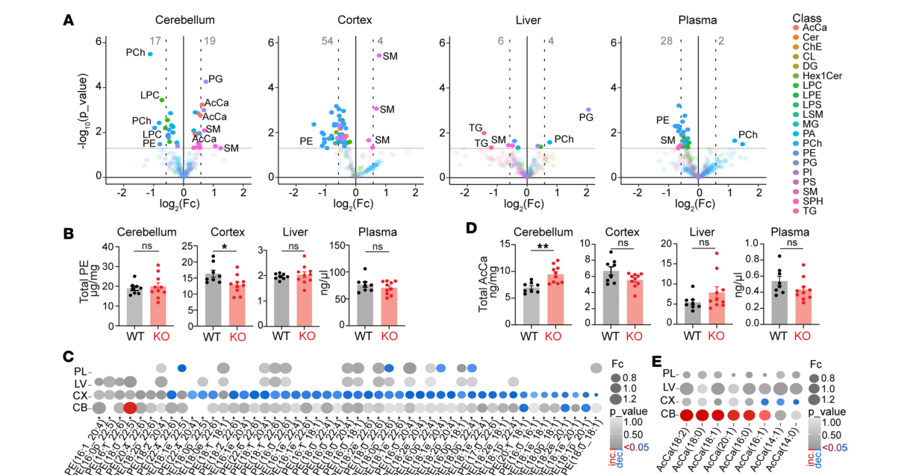

Autosomal recessive spinocerebellar ataxia 20 (SCAR20; OMIM 616354), also called intellectual disability-coarse face-macrocephaly-cerebellar hypoplasia syndrome and, in the older literature, "SNX14 syndrome," is a rare autosomal recessive neurodevelopmental and neurodegenerative disorder caused by biallelic loss-of-function variants in SNX14 (sorting nexin 14). The core clinical picture is early-onset cerebellar ataxia with severe-to-profound intellectual disability, delayed or absent expressive speech, muscular hypotonia, progressively coarsening facial features, and relative macrocephaly. Brain MRI shows early-onset cerebellar atrophy/hypoplasia (vermis and hemispheres) with progressive loss of Purkinje cells. Sensorineural hearing loss and skeletal abnormalities are common. Nystagmus is frequent, having been seen in most children in the 12-family cohort, while strabismus and the movement features (dystonia, stereotypies) are reported in a subset. The absence of seizures was a distinctive feature in the original description, but seizures are now recognized in a substantial fraction of patients — developing in half of one cohort by age 2, and generally well controlled with anticonvulsants. SNX14 is a membrane-associated PX/RGS-domain sorting nexin that localizes to lysosomes and to endoplasmic-reticulum-lipid-droplet contact sites; its loss impairs autophagosome-lysosome function and neutral-lipid/cholesterol homeostasis, and in patient cells and animal models is associated with selective cerebellar Purkinje-cell degeneration. SCAR20 is classified among the congenital disorders of autophagy.
Ask a research question about Autosomal Recessive Spinocerebellar Ataxia 20. OpenScientist will conduct autonomous deep research using the Disorder Mechanisms Knowledge Base and PubMed literature (typically 10-30 minutes).
Do not include personal health information in your question. Questions and results are cached in your browser's local storage.
Conditions with similar clinical presentations that must be differentiated from Autosomal Recessive Spinocerebellar Ataxia 20:
name: Autosomal Recessive Spinocerebellar Ataxia 20
creation_date: "2026-08-12T00:00:00Z"
category: Mendelian
disease_term:
preferred_term: autosomal recessive spinocerebellar ataxia 20
term:
id: MONDO:0014601
label: autosomal recessive spinocerebellar ataxia 20
description: >
Autosomal recessive spinocerebellar ataxia 20 (SCAR20; OMIM 616354), also called
intellectual disability-coarse face-macrocephaly-cerebellar hypoplasia syndrome and, in the
older literature, "SNX14 syndrome," is a rare autosomal recessive neurodevelopmental and
neurodegenerative disorder caused by biallelic loss-of-function variants in SNX14 (sorting
nexin 14). The core clinical picture is early-onset cerebellar ataxia with severe-to-profound
intellectual disability, delayed or absent expressive speech, muscular hypotonia,
progressively coarsening facial features, and relative macrocephaly. Brain MRI shows
early-onset cerebellar atrophy/hypoplasia (vermis and hemispheres) with progressive loss of
Purkinje cells. Sensorineural hearing loss and skeletal abnormalities are common. Nystagmus is
frequent, having been seen in most children in the 12-family cohort, while strabismus and the
movement features (dystonia, stereotypies) are reported in a subset. The absence of seizures
was a distinctive feature in the original description, but seizures are now recognized in a
substantial fraction of patients — developing in half of one cohort by age 2, and generally
well controlled with anticonvulsants. SNX14 is a
membrane-associated PX/RGS-domain sorting nexin that localizes to lysosomes and to
endoplasmic-reticulum-lipid-droplet contact sites; its loss impairs autophagosome-lysosome
function and neutral-lipid/cholesterol homeostasis, and in patient cells and animal models is
associated with selective cerebellar Purkinje-cell degeneration. SCAR20 is classified among
the congenital disorders of autophagy.
inheritance:
- name: Autosomal recessive inheritance
description: >
SCAR20 is inherited in an autosomal recessive manner. It was first defined in consanguineous
families with affected individuals homozygous for loss-of-function SNX14 variants; a
non-consanguineous family with compound heterozygous variants has since been reported.
Unaffected parents are heterozygous carriers.
inheritance_term:
preferred_term: Autosomal recessive inheritance
term:
id: HP:0000007
label: Autosomal recessive inheritance
evidence:
- reference: PMID:25439728
reference_title: "Mutations in SNX14 cause a distinctive autosomal-recessive cerebellar ataxia and intellectual disability syndrome."
supports: SUPPORT
evidence_source: HUMAN_CLINICAL
snippet: "Here we report the identification of causal mutations in Sorting Nexin 14 (SNX14) found in seven affected individuals from three unrelated consanguineous families who presented with recessively inherited moderate-severe intellectual disability, cerebellar ataxia, early-onset cerebellar atrophy, sensorineural hearing loss, and the distinctive association of progressively coarsening facial features, relative macrocephaly, and the absence of seizures."
explanation: Establishes autosomal recessive inheritance across three unrelated consanguineous families with biallelic SNX14 mutations.
- reference: PMID:33193593
reference_title: "Two Compound Heterozygous Variants in SNX14 Cause Stereotypies and Dystonia in Autosomal Recessive Spinocerebellar Ataxia 20."
supports: SUPPORT
evidence_source: HUMAN_CLINICAL
snippet: "Here we describe the first non-consanguineous SCAR20 family, the second Portuguese, with two siblings presenting similar clinical features caused by compound heterozygous SNX14 variants"
explanation: Documents compound heterozygous inheritance in the first non-consanguineous SCAR20 family, confirming the recessive mechanism outside consanguineous pedigrees.
pathophysiology:
- name: SNX14 Loss of Function
biological_scale: MOLECULAR
description: >
Biallelic loss-of-function variants in SNX14 abolish or truncate sorting nexin 14, a
membrane-associated protein containing Phox homology (PX) and regulator of G-protein
signaling (RGS) domains. Most disease-causing alleles are nonsense, frameshift, or splice
variants that reduce or eliminate SNX14 protein; several in-frame coding-region deletions
have also been reported. All characterized mutations either directly affect the PX domain or
diminish SNX14 levels, implicating loss of normal cellular function.
biological_processes:
- preferred_term: autophagy
term:
id: GO:0006914
label: autophagy
modifier: DECREASED
evidence:
- reference: PMID:25439728
reference_title: "Mutations in SNX14 cause a distinctive autosomal-recessive cerebellar ataxia and intellectual disability syndrome."
supports: SUPPORT
evidence_source: HUMAN_CLINICAL
snippet: "SNX14 encodes a cellular protein containing Phox (PX) and regulator of G protein signaling (RGS) domains."
explanation: Identifies the causative gene and the PX/RGS domain architecture of the encoded protein.
- reference: PMID:25848753
reference_title: "Biallelic mutations in SNX14 cause a syndromic form of cerebellar atrophy and lysosome-autophagosome dysfunction."
supports: SUPPORT
evidence_source: HUMAN_CLINICAL
snippet: "Here we describe a new clinically distinguishable recessive syndrome in 12 families with cerebellar atrophy together with ataxia, coarsened facial features and intellectual disability, due to truncating mutations in the sorting nexin gene SNX14, encoding a ubiquitously expressed modular PX domain-containing sorting factor."
explanation: Independently establishes biallelic truncating SNX14 mutations as the cause across 12 families.
downstream:
- target: Autophagosome-Lysosome Dysfunction
description: >-
Loss of SNX14 impairs lysosomal and autophagosome function.
- target: ER-Associated Neutral Lipid Dyshomeostasis
description: >-
Loss of SNX14 perturbs ER-based neutral-lipid and cholesterol handling.
- target: Axonal Mitochondrial Transport Failure
description: >-
In mouse models, SNX14 loss destabilizes spastin, disrupting axonal microtubule
organization and mitochondrial transport.
- name: Autophagosome-Lysosome Dysfunction
biological_scale: CELLULAR
description: >
SNX14 localizes to lysosomes and associates with phosphatidylinositol (3,5)-bisphosphate, a
key phosphoinositide of late endosomes/lysosomes. Patient-derived cells show engorged
lysosomes and slower autophagosome clearance on autophagy induction, and cultured
fibroblasts accumulate cytoplasmic vacuoles — establishing SCAR20 as a lysosome-autophagy
(congenital autophagy) disorder.
cell_types:
- preferred_term: fibroblast
term:
id: CL:0000057
label: fibroblast
biological_processes:
- preferred_term: autophagosome maturation
term:
id: GO:0097352
label: autophagosome maturation
modifier: ABNORMAL
- preferred_term: lysosomal transport
term:
id: GO:0007041
label: lysosomal transport
modifier: ABNORMAL
evidence:
- reference: PMID:25848753
reference_title: "Biallelic mutations in SNX14 cause a syndromic form of cerebellar atrophy and lysosome-autophagosome dysfunction."
supports: SUPPORT
evidence_source: IN_VITRO
snippet: "We found SNX14 localized to lysosomes and associated with phosphatidylinositol (3,5)-bisphosphate, a key component of late endosomes/lysosomes."
explanation: Localizes SNX14 to lysosomes and late endosomes, tying it to the endolysosomal compartment.
- reference: PMID:25848753
reference_title: "Biallelic mutations in SNX14 cause a syndromic form of cerebellar atrophy and lysosome-autophagosome dysfunction."
supports: SUPPORT
evidence_source: IN_VITRO
snippet: "Patient-derived cells showed engorged lysosomes and a slower autophagosome clearance rate upon autophagy induction by starvation."
explanation: Demonstrates impaired lysosomal morphology and autophagosome clearance in patient cells.
- reference: PMID:29635513
reference_title: "SNX14 mutations affect endoplasmic reticulum-associated neutral lipid metabolism in autosomal recessive spinocerebellar ataxia 20."
supports: SUPPORT
evidence_source: IN_VITRO
snippet: "Patient-derived fibroblasts show disrupted autophagy, but the precise function of SNX14 is unknown."
explanation: Independently confirms disrupted autophagy in SCAR20 patient fibroblasts.
- reference: PMID:25439728
reference_title: "Mutations in SNX14 cause a distinctive autosomal-recessive cerebellar ataxia and intellectual disability syndrome."
supports: SUPPORT
evidence_source: IN_VITRO
snippet: "This manifested as increased cytoplasmic vacuolation as observed in cultured fibroblasts."
explanation: Documents the cytoplasmic vacuolation (endolysosomal dysfunction) in patient fibroblasts.
downstream:
- target: Cerebellar Purkinje Cell Neurodegeneration
description: >-
Chronic autophagic-lysosomal dysfunction contributes to cerebellar Purkinje-cell loss.
- name: ER-Associated Neutral Lipid Dyshomeostasis
biological_scale: CELLULAR
description: >
Beyond the endolysosome, SNX14 is an endoplasmic-reticulum-associated protein that
localizes to ER-lipid-droplet contact sites following fatty-acid loading, where it promotes
lipid-droplet maturation and maintains membrane lipid-saturation balance. SNX14-deficient
cells accumulate lysosomal cholesterol, are hypersensitive to saturated-fatty-acid-mediated
lipotoxic cell death, and show defective neutral-lipid metabolism, implicating lipotoxicity
in the neurodegeneration of SCAR20.
cell_types:
- preferred_term: fibroblast
term:
id: CL:0000057
label: fibroblast
biological_processes:
- preferred_term: lipid homeostasis
term:
id: GO:0055088
label: lipid homeostasis
modifier: ABNORMAL
- preferred_term: lipid droplet formation
term:
id: GO:0140042
label: lipid droplet formation
modifier: ABNORMAL
- preferred_term: cholesterol homeostasis
term:
id: GO:0042632
label: cholesterol homeostasis
modifier: ABNORMAL
evidence:
- reference: PMID:29635513
reference_title: "SNX14 mutations affect endoplasmic reticulum-associated neutral lipid metabolism in autosomal recessive spinocerebellar ataxia 20."
supports: SUPPORT
evidence_source: IN_VITRO
snippet: "In addition, we find that SNX14 is an ER-associated protein that functions in neutral lipid homeostasis and inter-organelle crosstalk."
explanation: Establishes SNX14 as an ER-associated regulator of neutral lipid homeostasis.
- reference: PMID:29635513
reference_title: "SNX14 mutations affect endoplasmic reticulum-associated neutral lipid metabolism in autosomal recessive spinocerebellar ataxia 20."
supports: SUPPORT
evidence_source: IN_VITRO
snippet: "SNX14KO cells display distinct perinuclear accumulation of filipin in LAMP1-positive lysosomal structures indicating cholesterol accumulation."
explanation: Shows lysosomal cholesterol accumulation on SNX14 loss.
- reference: PMID:30765438
reference_title: "Cerebellar ataxia disease-associated Snx14 promotes lipid droplet growth at ER-droplet contacts."
supports: SUPPORT
evidence_source: IN_VITRO
snippet: "we show that sorting nexin protein Snx14, an ER-resident protein associated with the cerebellar ataxia SCAR20, localizes to ER-LD contacts following FA treatment, where it promotes LD maturation."
explanation: Localizes SNX14 to ER-lipid-droplet contacts where it promotes lipid-droplet maturation.
- reference: PMID:33310904
reference_title: "Snx14 proximity labeling reveals a role in saturated fatty acid metabolism and ER homeostasis defective in SCAR20 disease."
supports: SUPPORT
evidence_source: IN_VITRO
snippet: "both SNX14KO cells and SCAR20 disease patient-derived cells are hypersensitive to SFA-mediated lipotoxic cell death."
explanation: Links SNX14 loss to saturated-fatty-acid lipotoxicity in both engineered and patient cells.
downstream:
- target: Cerebellar Purkinje Cell Neurodegeneration
description: >-
Lipid dyshomeostasis and lipotoxicity contribute to selective Purkinje-cell death.
- name: Axonal Mitochondrial Transport Failure
biological_scale: CELLULAR
description: >
In Snx14-deficient mouse models, SNX14 loss destabilizes the microtubule-severing enzyme
spastin, disrupting microtubule organization and mitochondrial transport in axons and
compromising mitochondrial function in high-energy-demanding Purkinje cells. This is a
model-organism mechanism; the antiepileptic drug valproate ameliorated motor deficits and
cerebellar degeneration in these mice by restoring mitochondrial transport, a preclinical
finding not yet established as a human therapy.
cell_types:
- preferred_term: cerebellar Purkinje cell
term:
id: CL:0000121
label: Purkinje cell
biological_processes:
- preferred_term: mitochondrial transport
term:
id: GO:0006839
label: mitochondrial transport
modifier: DECREASED
evidence:
- reference: PMID:34691693
reference_title: "SNX14 deficiency-induced defective axonal mitochondrial transport in Purkinje cells underlies cerebellar ataxia and can be reversed by valproate."
supports: SUPPORT
evidence_source: MODEL_ORGANISM
snippet: "SNX14 deficiency disrupted microtubule organization and mitochondrial transport in axons by destabilizing the microtubule-severing enzyme spastin"
explanation: Establishes the axonal microtubule/mitochondrial-transport mechanism in Snx14-deficient mice.
downstream:
- target: Cerebellar Purkinje Cell Neurodegeneration
description: >-
Axonal transport failure and mitochondrial dysfunction drive Purkinje-cell degeneration.
- name: Cerebellar Purkinje Cell Neurodegeneration
biological_scale: TISSUE
conforms_to: "cerebellar_purkinje_degeneration#Purkinje Neuron Degeneration"
description: >
Early-onset cerebellar atrophy/hypoplasia (vermis and hemispheres) with progressive loss of
Purkinje cells underlies the ataxia. Purkinje cells are selectively vulnerable to SNX14
deficiency, while forebrain neuronal content is relatively preserved in mouse models; snx14
knockdown in zebrafish causes loss of cerebellar parenchyma with autophagosome accumulation
and apoptosis.
cell_types:
- preferred_term: cerebellar Purkinje cell
term:
id: CL:0000121
label: Purkinje cell
locations:
- preferred_term: cerebellum
term:
id: UBERON:0002037
label: cerebellum
evidence:
- reference: PMID:27913285
reference_title: "Autosomal recessive spinocerebellar ataxia 20: Report of a new patient and review of literature."
supports: SUPPORT
evidence_source: HUMAN_CLINICAL
snippet: "Autosomal recessive spinocerebellar ataxia 20 (SCAR20) is a recently described disorder characterized by intellectual disability, ataxia, coarse facial features, progressive loss of Purkinje cells in the cerebellum and often hearing loss and skeletal abnormalities."
explanation: Documents progressive cerebellar Purkinje-cell loss as a defining feature of SCAR20.
- reference: PMID:38625743
reference_title: "Altered lipid homeostasis is associated with cerebellar neurodegeneration in SNX14 deficiency."
supports: SUPPORT
evidence_source: MODEL_ORGANISM
snippet: "We demonstrate that cerebellar Purkinje cells (PCs) are selectively vulnerable to SNX14 deficiency while forebrain regions preserve their neuronal content."
explanation: Shows the selective cerebellar Purkinje-cell vulnerability in a SNX14-deficient mouse model.
- reference: PMID:25848753
reference_title: "Biallelic mutations in SNX14 cause a syndromic form of cerebellar atrophy and lysosome-autophagosome dysfunction."
supports: SUPPORT
evidence_source: MODEL_ORGANISM
snippet: "Zebrafish morphants for snx14 showed dramatic loss of cerebellar parenchyma, accumulation of autophagosomes and activation of apoptosis."
explanation: Model-organism evidence linking snx14 loss to cerebellar tissue loss, autophagosome accumulation, and apoptosis.
downstream:
- target: Cerebellar atrophy
description: >-
Progressive Purkinje-cell loss is the cellular substrate of the cerebellar
atrophy/hypoplasia seen on imaging.
evidence:
- reference: PMID:27913285
reference_title: "Autosomal recessive spinocerebellar ataxia 20: Report of a new patient and review of literature."
supports: SUPPORT
evidence_source: HUMAN_CLINICAL
snippet: "Autosomal recessive spinocerebellar ataxia 20 (SCAR20) is a recently described disorder characterized by intellectual disability, ataxia, coarse facial features, progressive loss of Purkinje cells in the cerebellum and often hearing loss and skeletal abnormalities."
explanation: Couples progressive cerebellar Purkinje-cell loss to the cerebellar structural phenotype in the same characterization of SCAR20.
- target: Cerebellar ataxia
description: >-
Loss of Purkinje cells removes the sole output of the cerebellar cortex,
producing the progressive ataxia.
evidence:
- reference: PMID:38625743
reference_title: "Altered lipid homeostasis is associated with cerebellar neurodegeneration in SNX14 deficiency."
supports: SUPPORT
evidence_source: MODEL_ORGANISM
snippet: "We demonstrate that cerebellar Purkinje cells (PCs) are selectively vulnerable to SNX14 deficiency while forebrain regions preserve their neuronal content."
explanation: Establishes the Purkinje cell as the selectively vulnerable population whose loss underlies the cerebellar motor phenotype.
phenotypes:
- name: Global developmental delay
description: Early global developmental delay preceding the recognizable syndrome.
phenotype_term:
preferred_term: Global developmental delay
term:
id: HP:0001263
label: Global developmental delay
evidence:
- reference: PMID:41294032
reference_title: "Exploring the Genetic Variations Underlying SNX14-Linked Autosomal Recessive Spinocerebellar Ataxia Type 20: A Case Series of 17 Patients From a Single Center in the Omani Population and Review of Literature."
supports: SUPPORT
evidence_source: HUMAN_CLINICAL
snippet: "Autosomal recessive spinocerebellar ataxia type 20 (SCAR20) is a rare neurodevelopmental disorder caused by biallelic variants in the SNX14 gene and characterized by developmental delay, hypotonia, cerebellar atrophy, and hearing loss."
explanation: A 17-patient Omani cohort lists developmental delay among the characterizing features.
- name: Intellectual disability
description: Moderate-to-severe intellectual disability; a defining feature.
phenotype_term:
preferred_term: Intellectual disability
term:
id: HP:0001249
label: Intellectual disability
evidence:
- reference: PMID:25439728
reference_title: "Mutations in SNX14 cause a distinctive autosomal-recessive cerebellar ataxia and intellectual disability syndrome."
supports: SUPPORT
evidence_source: HUMAN_CLINICAL
snippet: "recessively inherited moderate-severe intellectual disability, cerebellar ataxia, early-onset cerebellar atrophy, sensorineural hearing loss, and the distinctive association of progressively coarsening facial features, relative macrocephaly, and the absence of seizures"
explanation: Intellectual disability (moderate-severe) is a core feature in the discovery cohort.
- name: Cerebellar ataxia
description: Early-onset cerebellar ataxia; typically apparent in early childhood.
phenotype_term:
preferred_term: Cerebellar ataxia
term:
id: HP:0001251
label: Ataxia
evidence:
- reference: PMID:25848753
reference_title: "Biallelic mutations in SNX14 cause a syndromic form of cerebellar atrophy and lysosome-autophagosome dysfunction."
supports: SUPPORT
evidence_source: HUMAN_CLINICAL
snippet: "Here we describe a new clinically distinguishable recessive syndrome in 12 families with cerebellar atrophy together with ataxia, coarsened facial features and intellectual disability, due to truncating mutations in the sorting nexin gene SNX14"
explanation: Ataxia is a defining feature across 12 families.
- name: Cerebellar atrophy
description: Early-onset cerebellar (vermian and hemispheric) atrophy/hypoplasia on brain MRI.
phenotype_term:
preferred_term: Cerebellar atrophy
term:
id: HP:0001272
label: Cerebellar atrophy
evidence:
- reference: PMID:25439728
reference_title: "Mutations in SNX14 cause a distinctive autosomal-recessive cerebellar ataxia and intellectual disability syndrome."
supports: SUPPORT
evidence_source: HUMAN_CLINICAL
snippet: "recessively inherited moderate-severe intellectual disability, cerebellar ataxia, early-onset cerebellar atrophy, sensorineural hearing loss, and the distinctive association of progressively coarsening facial features, relative macrocephaly, and the absence of seizures"
explanation: Early-onset cerebellar atrophy is part of the defining syndrome.
- name: Coarse facial features
description: Progressively coarsening facial features, a distinctive clue to SCAR20.
phenotype_term:
preferred_term: Coarse facial features
term:
id: HP:0000280
label: Coarse facial features
clinical_course: PROGRESSIVE
evidence:
- reference: PMID:25439728
reference_title: "Mutations in SNX14 cause a distinctive autosomal-recessive cerebellar ataxia and intellectual disability syndrome."
supports: SUPPORT
evidence_source: HUMAN_CLINICAL
snippet: "the distinctive association of progressively coarsening facial features, relative macrocephaly, and the absence of seizures"
explanation: Progressively coarsening facial features are a distinctive syndromic feature.
- name: Relative macrocephaly
description: Relative (occasionally absolute) macrocephaly.
phenotype_term:
preferred_term: Relative macrocephaly
term:
id: HP:0004482
label: Relative macrocephaly
evidence:
- reference: PMID:25439728
reference_title: "Mutations in SNX14 cause a distinctive autosomal-recessive cerebellar ataxia and intellectual disability syndrome."
supports: SUPPORT
evidence_source: HUMAN_CLINICAL
snippet: "the distinctive association of progressively coarsening facial features, relative macrocephaly, and the absence of seizures"
explanation: Relative macrocephaly is part of the distinctive syndromic association.
- name: Sensorineural hearing impairment
description: Sensorineural hearing loss, present in many patients.
phenotype_term:
preferred_term: Sensorineural hearing impairment
term:
id: HP:0000407
label: Sensorineural hearing impairment
evidence:
- reference: PMID:25439728
reference_title: "Mutations in SNX14 cause a distinctive autosomal-recessive cerebellar ataxia and intellectual disability syndrome."
supports: SUPPORT
evidence_source: HUMAN_CLINICAL
snippet: "recessively inherited moderate-severe intellectual disability, cerebellar ataxia, early-onset cerebellar atrophy, sensorineural hearing loss, and the distinctive association of progressively coarsening facial features, relative macrocephaly, and the absence of seizures"
explanation: Sensorineural hearing loss is documented in the discovery cohort.
- name: Skeletal abnormalities
description: >
Skeletal abnormalities are often reported in SCAR20, including spinal deformities
and hand/chest anomalies. The cited review characterizes them as "often" present
without giving a rate, so no proportion is asserted here.
phenotype_term:
preferred_term: Abnormality of the skeletal system
term:
id: HP:0000924
label: Abnormality of the skeletal system
evidence:
- reference: PMID:27913285
reference_title: "Autosomal recessive spinocerebellar ataxia 20: Report of a new patient and review of literature."
supports: SUPPORT
evidence_source: HUMAN_CLINICAL
snippet: "Autosomal recessive spinocerebellar ataxia 20 (SCAR20) is a recently described disorder characterized by intellectual disability, ataxia, coarse facial features, progressive loss of Purkinje cells in the cerebellum and often hearing loss and skeletal abnormalities."
explanation: Lists skeletal abnormalities among the characteristic features of SCAR20.
- name: Hypotonia
description: Muscular hypotonia.
phenotype_term:
preferred_term: Hypotonia
term:
id: HP:0001252
label: Hypotonia
evidence:
- reference: PMID:35195341
reference_title: "Autosomal recessive spinocerebellar ataxia-20 due to a novel SNX14 variant in an Indian girl."
supports: SUPPORT
evidence_source: HUMAN_CLINICAL
snippet: "Coarse facies, intellectual disability with severe speech delay, hypotonia, and cerebellar atrophy were universal findings in the published cases."
explanation: A review of published cases reports hypotonia as a universal finding.
- name: Delayed speech and language development
description: Delayed or absent expressive speech; severe speech delay is typical.
phenotype_term:
preferred_term: Delayed speech and language development
term:
id: HP:0000750
label: Delayed speech and language development
evidence:
- reference: PMID:35195341
reference_title: "Autosomal recessive spinocerebellar ataxia-20 due to a novel SNX14 variant in an Indian girl."
supports: SUPPORT
evidence_source: HUMAN_CLINICAL
snippet: "Coarse facies, intellectual disability with severe speech delay, hypotonia, and cerebellar atrophy were universal findings in the published cases."
explanation: Severe speech delay is reported as a universal finding across published cases.
- name: Dystonia
description: >
Dystonia, reported in a compound-heterozygous SCAR20 sibling pair, expanding the
movement-disorder spectrum of the syndrome.
phenotype_term:
preferred_term: Dystonia
term:
id: HP:0001332
label: Dystonia
evidence:
- reference: PMID:33193593
reference_title: "Two Compound Heterozygous Variants in SNX14 Cause Stereotypies and Dystonia in Autosomal Recessive Spinocerebellar Ataxia 20."
supports: SUPPORT
evidence_source: HUMAN_CLINICAL
snippet: "Clinical phenotype includes dystonia and stereotypies never associated with SCAR20."
explanation: Reports dystonia as a newly recognized SCAR20 feature.
- name: Motor stereotypy
description: Stereotypies, reported alongside dystonia in a compound-heterozygous SCAR20 family.
phenotype_term:
preferred_term: Motor stereotypy
term:
id: HP:0000733
label: Motor stereotypy
evidence:
- reference: PMID:33193593
reference_title: "Two Compound Heterozygous Variants in SNX14 Cause Stereotypies and Dystonia in Autosomal Recessive Spinocerebellar Ataxia 20."
supports: SUPPORT
evidence_source: HUMAN_CLINICAL
snippet: "Clinical phenotype includes dystonia and stereotypies never associated with SCAR20."
explanation: Reports stereotypies as a newly recognized SCAR20 feature.
- name: Seizures
description: >
Seizures, absent in the original SNX14 description, are now recognized in a
substantial fraction of patients and are typically anticonvulsant-responsive.
phenotype_term:
preferred_term: Seizures
term:
id: HP:0001250
label: Seizure
evidence:
- reference: PMID:25848753
reference_title: "Biallelic mutations in SNX14 cause a syndromic form of cerebellar atrophy and lysosome-autophagosome dysfunction."
supports: SUPPORT
evidence_source: HUMAN_CLINICAL
snippet: "Seizures developed in half by 2 years, and were well controlled with anticonvulsant medication."
explanation: >-
Reports seizure onset in half the cohort by age 2, together with the
observation that they are well controlled pharmacologically.
- name: Nystagmus
description: Nystagmus, reported in most affected children in the 12-family cohort.
phenotype_term:
preferred_term: Nystagmus
term:
id: HP:0000639
label: Nystagmus
evidence:
- reference: PMID:25848753
reference_title: "Biallelic mutations in SNX14 cause a syndromic form of cerebellar atrophy and lysosome-autophagosome dysfunction."
supports: SUPPORT
evidence_source: HUMAN_CLINICAL
snippet: "Nystagmus, difficulty ambulating and reduced deep tendon reflexes were seen in most children"
explanation: Places nystagmus among the features seen in most children in the cohort.
- name: Hepatosplenomegaly
description: >
Palpable liver or spleen edge, detected in a minority of patients on examination.
phenotype_term:
preferred_term: Hepatosplenomegaly
term:
id: HP:0001433
label: Hepatosplenomegaly
evidence:
- reference: PMID:25848753
reference_title: "Biallelic mutations in SNX14 cause a syndromic form of cerebellar atrophy and lysosome-autophagosome dysfunction."
supports: SUPPORT
evidence_source: HUMAN_CLINICAL
snippet: "Palpable liver or spleen edge was detected in 5 of 18 patients"
explanation: Gives the explicit numerator/denominator for organomegaly in the cohort.
- name: Hypertrichosis
description: Increased facial and body hair, described in a SCAR20 patient report.
phenotype_term:
preferred_term: Hypertrichosis
term:
id: HP:0000998
label: Hypertrichosis
evidence:
- reference: PMID:27913285
reference_title: "Autosomal recessive spinocerebellar ataxia 20: Report of a new patient and review of literature."
supports: SUPPORT
evidence_source: HUMAN_CLINICAL
snippet: "She had increased facial and body hair"
explanation: >-
Single-patient description of increased facial and body hair. Supports the
presence of the feature only; no cohort proportion is asserted here.
genetic:
- name: SNX14
notes: >
Biallelic loss-of-function variants in SNX14 (sorting nexin 14; chromosome 6q14.3) cause
SCAR20. Most alleles are nonsense, frameshift, or splice variants that reduce or eliminate
protein; in-frame multiexon deletions and, more recently, deep-intronic pseudoexon-activating
and compound-heterozygous complex rearrangements have also been reported. Founder/recurrent
alleles occur in consanguineous populations (e.g. the Omani c.647_648del founder allele).
gene_term:
preferred_term: SNX14
term:
id: hgnc:14977
label: SNX14
relationship_type: CAUSATIVE
variants:
- name: SNX14 c.647_648del (p.Glu216ValfsX24)
description: >
Recurrent Omani founder frameshift deletion; the most common allele in a 17-patient
single-center Omani cohort (seven patients).
type: frameshift
clinical_significance: PATHOGENIC
regulatory_category: LOF
evidence:
- reference: PMID:41294032
reference_title: "Exploring the Genetic Variations Underlying SNX14-Linked Autosomal Recessive Spinocerebellar Ataxia Type 20: A Case Series of 17 Patients From a Single Center in the Omani Population and Review of Literature."
supports: SUPPORT
evidence_source: HUMAN_CLINICAL
snippet: "The most common variant was SNX14 c.647_648del (p.Glu216Valfs24), identified in seven patients."
explanation: Identifies the recurrent founder frameshift allele in the Omani cohort.
- name: SNX14 compound heterozygous complex rearrangement (p.Arg399X + genomic rearrangement)
description: >
Compound heterozygous nonsense variant (c.1195C>T, p.Arg399X) combined with a novel
complex genomic rearrangement in the first non-consanguineous SCAR20 family; associated
with a dystonia/stereotypy phenotype expansion.
type: complex rearrangement
clinical_significance: PATHOGENIC
regulatory_category: LOF
evidence:
- reference: PMID:33193593
reference_title: "Two Compound Heterozygous Variants in SNX14 Cause Stereotypies and Dystonia in Autosomal Recessive Spinocerebellar Ataxia 20."
supports: SUPPORT
evidence_source: HUMAN_CLINICAL
snippet: "Here we describe the first non-consanguineous SCAR20 family, the second Portuguese, with two siblings presenting similar clinical features caused by compound heterozygous SNX14 variants"
explanation: Documents the first compound-heterozygous SCAR20 genotype.
evidence:
- reference: PMID:25439728
reference_title: "Mutations in SNX14 cause a distinctive autosomal-recessive cerebellar ataxia and intellectual disability syndrome."
supports: SUPPORT
evidence_source: HUMAN_CLINICAL
snippet: "Here we report the identification of causal mutations in Sorting Nexin 14 (SNX14) found in seven affected individuals from three unrelated consanguineous families who presented with recessively inherited moderate-severe intellectual disability, cerebellar ataxia, early-onset cerebellar atrophy, sensorineural hearing loss, and the distinctive association of progressively coarsening facial features, relative macrocephaly, and the absence of seizures."
explanation: Establishes SNX14 as the causative gene for the syndrome.
diagnosis:
- name: Molecular Genetic Testing
description: >
Diagnosis is established by identifying biallelic pathogenic SNX14 variants, typically by
exome sequencing (often combined with homozygosity/autozygosity mapping in consanguineous
families). Deep-intronic and complex structural alleles may require RNA studies or long-range
PCR. Brain MRI showing early-onset cerebellar atrophy in a child with intellectual
disability, coarse facies, and relative macrocephaly is the key clinical-radiological clue.
evidence:
- reference: PMID:25439728
reference_title: "Mutations in SNX14 cause a distinctive autosomal-recessive cerebellar ataxia and intellectual disability syndrome."
supports: SUPPORT
evidence_source: HUMAN_CLINICAL
snippet: "We used homozygosity mapping and whole-exome sequencing to identify a homozygous nonsense mutation and an in-frame multiexon deletion in two families."
explanation: Describes the homozygosity-mapping plus exome-sequencing diagnostic approach.
differential_diagnoses:
- name: Autosomal recessive spinocerebellar ataxia 15 (RUBCN)
description: >
RUBCN-related recessive cerebellar ataxia with intellectual disability and epilepsy. Shares
the recessive-ataxia-plus-ID phenotype and the autophagy connection, but is distinguished by
the causal gene (RUBCN vs SNX14) and prominent epilepsy.
distinguishing_features:
- Biallelic RUBCN variants rather than SNX14
- Prominent epilepsy (contrast with the characteristic absence of seizures in classic SCAR20)
- name: Other congenital disorders of autophagy
description: >
A broader class of autophagy-gene disorders (e.g. EPG5/Vici syndrome, WDR45, SPG11/SPG15)
presenting with neurodevelopmental delay and neurodegeneration, distinguished by their
specific genes and additional systemic features.
distinguishing_features:
- Distinct causal autophagy genes and organ-specific features
- name: Other recessive/childhood ataxias with cerebellar atrophy
description: >
Broad differential of childhood cerebellar-atrophy ataxias (e.g. Friedreich ataxia, ataxia
with vitamin E deficiency, ataxia-telangiectasia, ARSACS), distinguished by additional
system involvement and their specific genes.
distinguishing_features:
- The distinctive SCAR20 triad of coarse facies, relative macrocephaly, and progressive Purkinje-cell loss
prevalence:
- population: Worldwide
measure_type: CASES_IN_LITERATURE
prevalence_class: ULTRA_RARE
notes: >
Ultra-rare; fewer than ~35 cases had been reported worldwide as of 2022, with clustering in
consanguineous populations (a single Omani center subsequently reported 17 patients).
evidence:
- reference: PMID:35195341
reference_title: "Autosomal recessive spinocerebellar ataxia-20 due to a novel SNX14 variant in an Indian girl."
supports: SUPPORT
evidence_source: HUMAN_CLINICAL
snippet: "Autosomal recessive spinocerebellar ataxia-20 is a rare disorder having distinctive coarse facies in addition to intellectual disability and cerebellar ataxia, with less than 35 cases reported worldwide."
explanation: Documents the ultra-rare literature count (fewer than 35 cases worldwide).
animal_models:
- name: Hungarian Vizsla cerebellar cortical degeneration (natural SNX14 model)
species: Dog
genotype: SNX14 splice-donor-site variant, homozygous (naturally occurring)
background: Hungarian Vizsla
publication: PMID:27566131
description: >
A naturally occurring canine cerebellar cortical degeneration in Hungarian Vizsla dogs
caused by a homozygous SNX14 splice-donor-site variant that abolishes SNX14 protein. Two
full-sibling puppies developed progressive cerebellar ataxia from ~3 months of age with
primary Purkinje-neuron loss on histopathology and cerebellar atrophy on MRI — a spontaneous
large-animal correlate of human SCAR20's Purkinje-cell degeneration.
evidence:
- reference: PMID:27566131
reference_title: "Genome sequencing reveals a splice donor site mutation in the SNX14 gene associated with a novel cerebellar cortical degeneration in the Hungarian Vizsla dog breed."
supports: SUPPORT
evidence_source: MODEL_ORGANISM
snippet: "Whole genome sequencing was used to successfully identify a disease-associated splice donor site variant in the sorting nexin 14 gene (SNX14) as a strong causative candidate."
explanation: Establishes a naturally occurring SNX14 loss-of-function canine model of cerebellar cortical degeneration.
modeled_mechanisms:
- target: Cerebellar Purkinje Cell Neurodegeneration
relationship: RECAPITULATES
fidelity: MODERATE
description: >-
Spontaneous, early-onset progressive cerebellar ataxia with primary Purkinje-neuron loss
and cerebellar atrophy, driven by SNX14 loss of function as in human SCAR20.
limitations: >-
A dog breed (species divergence), and the canine phenotype is a comparatively pure
cerebellar cortical degeneration lacking the syndromic intellectual disability, coarse
facies, and relative macrocephaly of human SCAR20. Rapid clinical course led to early
euthanasia. Therapeutic inferences should not be transferred without human corroboration.
readouts:
- name: Cerebellar Purkinje neuron content
target: Cerebellar Purkinje Cell Neurodegeneration
description: >-
Cerebellar histopathology in affected Vizsla puppies.
direction: DECREASED
interpretation: >-
Primary Purkinje-neuron loss is the structural correlate of the degeneration node in
this natural model.
evidence:
- reference: PMID:27566131
reference_title: "Genome sequencing reveals a splice donor site mutation in the SNX14 gene associated with a novel cerebellar cortical degeneration in the Hungarian Vizsla dog breed."
supports: SUPPORT
evidence_source: MODEL_ORGANISM
snippet: "Histopathological examination revealed primary Purkinje neuron loss consistent with CCD."
explanation: Documents the primary Purkinje-neuron loss underlying the model's ataxia.
evidence:
- reference: PMID:27566131
reference_title: "Genome sequencing reveals a splice donor site mutation in the SNX14 gene associated with a novel cerebellar cortical degeneration in the Hungarian Vizsla dog breed."
supports: SUPPORT
evidence_source: MODEL_ORGANISM
snippet: "Two full-sibling Hungarian Vizsla puppies from a litter of nine presented with a history of progressive ataxia, starting around three months of age."
explanation: Supports treating the Vizsla CCD as an informative natural model of the cerebellar-degeneration node.
- name: Snx14-deficient mouse
species: Mouse
genotype: Snx14-deficient (knockout)
publication: PMID:34691693
description: >
Engineered Snx14-deficient mice reproduce cell-autonomous cerebellar Purkinje-cell
degeneration and severe motor deficits. Purkinje cells are selectively vulnerable while
forebrain neuronal content is preserved. Mechanistically, SNX14 loss destabilizes spastin
and disrupts axonal microtubule organization and mitochondrial transport; the antiepileptic
drug valproate partially rescued motor deficits and cerebellar degeneration by restoring
mitochondrial transport — a preclinical, mouse-only finding.
evidence:
- reference: PMID:34691693
reference_title: "SNX14 deficiency-induced defective axonal mitochondrial transport in Purkinje cells underlies cerebellar ataxia and can be reversed by valproate."
supports: SUPPORT
evidence_source: MODEL_ORGANISM
snippet: "We generated Snx14-deficient mouse models and observed severe motor deficits and cell-autonomous Purkinje cell degeneration."
explanation: Establishes the Snx14-deficient mouse as a model of the cerebellar Purkinje-cell degeneration node.
modeled_mechanisms:
- target: Cerebellar Purkinje Cell Neurodegeneration
relationship: RECAPITULATES
fidelity: MODERATE
description: >-
Cell-autonomous Purkinje-cell degeneration with severe motor deficits and selective
cerebellar vulnerability, recapitulating the human SCAR20 degeneration node.
limitations: >-
Mouse model; the valproate rescue is preclinical and has not been established as a human
therapy. Captures the cerebellar-motor phenotype but not the full human syndromic
spectrum.
readouts:
- name: Purkinje-cell degeneration and motor performance
target: Cerebellar Purkinje Cell Neurodegeneration
description: >-
Cerebellar Purkinje-cell survival and motor behaviour in Snx14-deficient mice, with and
without valproate.
direction: RESTORED
interpretation: >-
Valproate partially restored motor function and limited cerebellar degeneration by
rescuing mitochondrial transport, supporting the axonal-transport mechanism — a
preclinical rescue, not a human treatment.
evidence:
- reference: PMID:34691693
reference_title: "SNX14 deficiency-induced defective axonal mitochondrial transport in Purkinje cells underlies cerebellar ataxia and can be reversed by valproate."
supports: SUPPORT
evidence_source: MODEL_ORGANISM
snippet: "The antiepileptic drug valproate ameliorated motor deficits and cerebellar degeneration in Snx14-deficient mice via the restoration of mitochondrial transport and function in Purkinje cells."
explanation: Documents the valproate rescue of motor deficits and cerebellar degeneration in the mouse model.
evidence:
- reference: PMID:38625743
reference_title: "Altered lipid homeostasis is associated with cerebellar neurodegeneration in SNX14 deficiency."
supports: SUPPORT
evidence_source: MODEL_ORGANISM
snippet: "We demonstrate that cerebellar Purkinje cells (PCs) are selectively vulnerable to SNX14 deficiency while forebrain regions preserve their neuronal content."
explanation: An independent SNX14-deficient mouse model confirms selective cerebellar Purkinje-cell vulnerability.
treatments:
- name: Supportive and Multidisciplinary Care
description: >
No disease-modifying therapy exists. Management is symptomatic and multidisciplinary,
addressing developmental, motor, communication, hearing, and orthopedic needs.
treatment_term:
preferred_term: Supportive Care
term:
id: NCIT:C15747
label: Supportive Care
evidence:
- reference: PMID:41294032
reference_title: "Exploring the Genetic Variations Underlying SNX14-Linked Autosomal Recessive Spinocerebellar Ataxia Type 20: A Case Series of 17 Patients From a Single Center in the Omani Population and Review of Literature."
supports: SUPPORT
evidence_source: HUMAN_CLINICAL
snippet: "This report expands the mutational and clinical spectrum of SCAR20 in the Middle East and highlights the importance of early genetic testing, diagnostic vigilance, and multidisciplinary care in consanguineous populations."
explanation: Emphasizes early diagnosis and multidisciplinary supportive care as the mainstay of management.
- name: Rehabilitation and Physical Therapy
description: >
Physiotherapy, rehabilitation, and communication/speech support for ataxia, hypotonia, and
developmental impairment.
treatment_term:
preferred_term: Physical Therapy
term:
id: NCIT:C15302
label: Physical Therapy
therapeutic_modality: BEHAVIORAL
Scope and evidence date. This report emphasizes primary human and experimental evidence available through 2024. SCAR20 is exceptionally rare; consequently, many clinical estimates derive from small, partly overlapping cohorts rather than population registries. Statements labeled unknown should not be interpreted as evidence of absence.
Autosomal recessive spinocerebellar ataxia 20 (SCAR20) is a childhood-onset syndromic neurodevelopmental and neurodegenerative disorder caused by biallelic loss-of-function or function-reducing variants in SNX14. The defining phenotype combines global developmental delay or severe intellectual disability, markedly limited or absent speech, congenital/early hypotonia, gait ataxia, progressive cerebellar atrophy, relative macrocephaly, and recognizable coarse facial features. In the principal 22-person cohort, delayed motor development, delayed/absent language and social development, hypotonia, gait abnormality, cerebellar atrophy, and coarse facies were each reported in 22/22 individuals; seizures occurred in 8/22 and autistic-like behavior in 12/22. (akizu2015biallelicmutationsin pages 21-23)
Current mechanistic evidence converges on defective lipid handling at endoplasmic-reticulum (ER)–lipid-droplet and lysosomal interfaces, impaired fatty-acid desaturation and storage, and disturbed microtubule-dependent mitochondrial transport. Cerebellar Purkinje cells are selectively vulnerable. A 2024 mouse study found cerebellum-specific acylcarnitine accumulation, reduced triglyceride species, fewer lipid droplets, and enlarged telolysosomes before overt Purkinje-cell degeneration. No disease-modifying human treatment or SCAR20-specific interventional trial has been established; valproate and SCD1-directed rescue remain preclinical findings. (zhou2024alteredlipidhomeostasis pages 1-2, zhou2024alteredlipidhomeostasis pages 9-12, zhou2024alteredlipidhomeostasis pages 12-13)
| Domain | Best-established finding | Evidence type / year | Key quantitative data | Knowledge-base ontology suggestions |
|---|---|---|---|---|
| Identity / causal gene | SCAR20 is an ultra-rare Mendelian neurodevelopmental/neurodegenerative disorder caused by biallelic loss-of-function or loss-reducing variants in SNX14; identifiers include OMIM #616354 and MONDO:0014601. | Human disease-gene association, discovery cohort and curated disease-target evidence, 2015-2024 (akizu2015biallelicmutationsin pages 4-6, OpenTargets Search: autosomal recessive spinocerebellar ataxia 20-SNX14) | Open Targets lists 1 associated target (SNX14) for MONDO_0014601; early human reports established 22 affected individuals in one major cohort (OpenTargets Search: autosomal recessive spinocerebellar ataxia 20-SNX14, akizu2015biallelicmutationsin pages 21-23) | MONDO:0014601; OMIM:616354; HGNC:SNX14; NCBI Gene: SNX14; inheritance: HP:0000007 |
| Core human phenotype and frequencies | Core syndrome: developmental delay/intellectual disability, hypotonia, gait abnormality/ataxia, cerebellar atrophy, coarse facies; frequent autistic-like behavior, nystagmus, hypertrichosis/macroglossia; seizures and hearing loss occur in a subset. | Primary human cohort, 2015; expanded case reports 2020-2024 (akizu2015biallelicmutationsin pages 21-23, kim2021twokoreansiblings pages 1-3, levchenko2023homozygousdeepintronic pages 1-2, maia2020twocompoundheterozygous pages 1-2) | In 22/22: delayed gross/fine motor development, delayed/absent language and social skills, hypotonia, gait abnormalities, cerebellar atrophy, coarse facies. Additional features: autistic-like behavior 12/22 (55%), nystagmus 11/22 (50%), hypertrichosis 12/22 (55%), macroglossia 12/22 (55%), epileptic seizures 8/22 (36%), hepatosplenomegaly 5/22 (23%) (akizu2015biallelicmutationsin pages 21-23) | HPO: HP:0001263 developmental delay; HP:0001249 intellectual disability; HP:0001252 hypotonia; HP:0002066 gait ataxia; HP:0001251 ataxia; HP:0001272 cerebellar atrophy; HP:0000280 coarse face; HP:0000717 autism; HP:0000639 nystagmus; HP:0000998 hypertrichosis; HP:0000158 macroglossia; HP:0001250 seizures; HP:0000407 sensorineural hearing impairment |
| Course / imaging | Typically childhood-onset, often evident in infancy with progressive cerebellar degeneration; MRI may be normal early and then become abnormal, showing progressive cerebellar atrophy/hypotrophy, sometimes delayed myelination, pontine atrophy, thin corpus callosum, or extra-axial fluid prominence. | Primary human case series, 2020-2024 (kim2021twokoreansiblings pages 1-3, kim2021twokoreansiblings pages 3-4, levchenko2023homozygousdeepintronic pages 1-2, maia2020twocompoundheterozygous pages 1-2) | Examples: onset by 3 months with hypotonia/lack of head control in one family; one child had cerebellum normal on MRI at 2 years but sibling showed progressive cerebellar atrophy by 4 years; delayed sitting at 11 months, ataxic gait at 1.5 years, first words at 2 years reported in 2023 case (kim2021twokoreansiblings pages 1-3, levchenko2023homozygousdeepintronic pages 1-2, maia2020twocompoundheterozygous pages 1-2) | HPO: HP:0012759 neurodevelopmental delay; HP:0001317 delayed myelination; HP:0001272 cerebellar atrophy; HP:0002500 abnormal cerebral white matter morphology; HP:0002060 abnormality of cerebellar vermis; UBERON:0002037 cerebellum; UBERON:0001891 pons; UBERON:0000955 brain |
| Molecular mechanism | SNX14 localizes to ER and ER-lipid droplet contacts and is required for neutral lipid homeostasis, fatty-acid desaturation/lipid droplet biogenesis, lysosome-autophagy function, and in mouse Purkinje cells also supports spastin-dependent microtubule organization and axonal mitochondrial transport. | Human cells, engineered cell lines, mouse mechanistic studies, 2018-2024 (bryant2018snx14mutationsaffect pages 1-2, zhang2021snx14deficiencyinduceddefective pages 8-9, zhou2024alteredlipidhomeostasis pages 1-2, zhang2021snx14deficiencyinduceddefective pages 12-12) | SNX14-deficient Purkinje cells formed about 50% fewer oleic-acid-induced lipid droplets than WT; spastin interaction and mitochondrial transport defects were quantified in 28-29 cells/group in mouse neuron assays; discovery paper identified lysosome/autophagosome dysfunction in affected individuals (zhou2024alteredlipidhomeostasis pages 9-12, zhang2021snx14deficiencyinduceddefective pages 8-9, akizu2015biallelicmutationsin pages 4-6) | GO:0005783 endoplasmic reticulum; GO:0005811 lipid droplet; GO:0005764 lysosome; GO:0016236 macroautophagy; GO:0006869 lipid transport; GO:0035357 peroxisome organization not established; GO:0007005 mitochondrion organization; GO:0007018 microtubule-based movement; CL:0000121 Purkinje cell |
| 2024 omics findings | 2024 mouse multi-omics/ultrastructure work linked selective cerebellar vulnerability to lipid dyshomeostasis, especially acylcarnitine accumulation and triglyceride depletion before overt Purkinje-cell loss. | Mouse lipidomics, MALDI-MS imaging, TEM, RNA-seq-associated paper, 2024 (zhou2024alteredlipidhomeostasis pages 1-2, zhou2024alteredlipidhomeostasis pages 9-12, zhou2024alteredlipidhomeostasis pages 12-13) | Lipidomics in n=8 WT and n=10 KO mice showed significantly increased acylcarnitines only in cerebellum; MALDI-MS showed cerebellar reduction of PE C38:2, TG 46:1, TG 53:2 and accumulation of L-carnitine; TEM in n=3 mice/genotype showed fewer but enlarged telolysosomes; predegenerating PCs had mostly intact mitochondria, supporting a primary lipid storage/clearance defect (zhou2024alteredlipidhomeostasis pages 9-12) | CHEBI: acylcarnitine, L-carnitine, triglyceride, phosphatidylethanolamine; GO:0006631 fatty acid metabolic process; GO:0016042 lipid catabolic process; GO:0005773 vacuole/lysosomal compartment; CL:0000121 Purkinje cell; UBERON:0002037 cerebellum |
| Diagnosis | Diagnosis is gene-first plus phenotyping: WES commonly identifies biallelic SNX14 variants; WGS can solve deep intronic disease; RNA studies confirm aberrant splicing; MRI and clinical pattern support interpretation. | Human diagnostic studies, 2015-2024 (akizu2015biallelicmutationsin pages 4-6, kim2021twokoreansiblings pages 1-3, levchenko2023homozygousdeepintronic pages 1-2, shao2024compoundheterozygousmutation pages 1-2, maia2020twocompoundheterozygous pages 1-2) | WES enabled discovery and additional families in 2015; 2023 report identified first deep intronic variant c.462-589A>G by trio WGS, causing pseudo-exon inclusion and predicted p.Asp155Valfs*8; 2021 Korean family had homozygous c.2746-2A>G; 2024 family had p.Arg238Ter plus p.Gln915Leu with in-vitro expression reduction (levchenko2023homozygousdeepintronic pages 1-2, kim2021twokoreansiblings pages 1-3, shao2024compoundheterozygousmutation pages 1-2) | SO:0001589 frameshift_variant; SO:0001578 stop_gained; SO:0001629 splice_acceptor_variant / splice_region_variant; NCIT: whole exome sequencing, whole genome sequencing, Sanger sequencing, magnetic resonance imaging |
| Treatment status | No disease-specific human therapy or interventional SCAR20 trial identified; management is supportive/rehabilitative. Valproate is mouse-only preclinical evidence and should not be interpreted as established patient treatment. | Clinical-trial search plus preclinical rescue studies, 2021-2024 (zhang2021snx14deficiencyinduceddefective pages 8-9, zhou2024alteredlipidhomeostasis pages 12-13) | ClinicalTrials searches retrieved no relevant SCAR20 interventional trials. In mice, valproate/valproic acid partially rescued motor deficits or Purkinje-cell degeneration; SCD1 overexpression rescued cellular lipid phenotypes in vitro, also preclinical only (zhang2021snx14deficiencyinduceddefective pages 8-9, zhou2024alteredlipidhomeostasis pages 12-13) | NCIT: supportive care; physical therapy; occupational therapy; speech therapy; valproic acid mouse-only preclinical; genetic counseling |
| Models | Experimental and natural models converge on Purkinje-cell/cerebellar pathology and lipid-homeostasis mechanisms. | Zebrafish, mouse, dog, human cell models, 2015-2024 (fenn2016genomesequencingreveals pages 1-2, akizu2015biallelicmutationsin pages 4-6, zhang2021snx14deficiencyinduceddefective pages 8-9, zhou2024alteredlipidhomeostasis pages 1-2, bryant2018snx14mutationsaffect pages 1-2) | Zebrafish knockdown showed loss of neural tissue volume/reduced Purkinje-cell area; mouse KO models show selective Purkinje-cell degeneration and motor deficits; Hungarian Vizsla natural disease involved 2 affected full-sibling puppies from a litter of 9 and carrier detection in 3/133 unaffected dogs; no epidemiologic prevalence/incidence estimate for human SCAR20 is established (unknown) (fenn2016genomesequencingreveals pages 1-2, akizu2015biallelicmutationsin pages 4-6) | NCBI Taxon: 10090 mouse, 7955 zebrafish, 9615 dog, 9606 human; CL:0000121 Purkinje cell; UBERON:0002037 cerebellum; disease frequency metadata: prevalence unknown, incidence unknown |
Table: This table summarizes the strongest currently gathered evidence for SNX14-related autosomal recessive spinocerebellar ataxia 20 across clinical, mechanistic, diagnostic, and model-system domains. It is designed to help populate a structured knowledge base while clearly separating human-established findings from mouse-only preclinical results.
SCAR20 is a Mendelian, autosomal-recessive, syndromic cerebellar ataxia caused by biallelic pathogenic variants in SNX14, encoding sorting nexin 14. It combines impaired neurodevelopment with progressive cerebellar degeneration rather than representing an isolated adult-onset ataxia. Open Targets links SNX14 (Ensembl ENSG00000135317) to SCAR20 with five supporting evidence records, including expert-panel and human-genetic evidence. (OpenTargets Search: autosomal recessive spinocerebellar ataxia 20-SNX14)
The evidence is principally aggregated disease-level literature and curated genetic resources, underpinned by individually phenotyped families. It is not derived from large electronic-health-record cohorts.
Important nomenclature caution: the correct OMIM number is 616354. One 2023 article’s introductory text was rendered as “MIM:216354” in an extracted passage, but the established identifier in the broader literature is 616354. (kim2021twokoreansiblings pages 1-3, levchenko2023homozygousdeepintronic pages 1-2, bryant2018snx14mutationsaffect pages 1-2)
The necessary causal factor is biallelic germline SNX14 dysfunction. Most established alleles are nonsense, frameshift, canonical splice, exon-level deletion, or complex structural variants expected to cause absent/truncated protein or nonsense-mediated decay. Missense alleles require especially careful functional and segregation evidence because loss of SNX14 is the best-supported disease mechanism. (levchenko2023homozygousdeepintronic pages 1-2, bryant2018snx14mutationsaffect pages 1-2, kim2021twokoreansiblings pages 4-5)
Recent examples include:
Experimental saturated-fatty-acid exposure intensifies ER stress/toxicity in SNX14-deficient cells, whereas oleate is used experimentally to stimulate lipid droplets. This demonstrates cellular context sensitivity, not a proven dietary gene–environment interaction in patients. No evidence currently supports prescribing a particular fat intake to alter human SCAR20. (zhou2024alteredlipidhomeostasis pages 1-2, bryant2018snx14mutationsaffect pages 1-2)
The best quantitative estimates come from the 22-person discovery/expansion cohort and should be treated as approximate because ascertainment favored recognizable severe cases. (akizu2015biallelicmutationsin pages 21-23)
| Phenotype | Type, onset/course, reported frequency | Functional impact | Suggested HPO term |
|---|---|---|---|
| Global developmental delay | Symptom/sign; infancy; severe; 22/22 in principal cohort | Delayed milestones and lifelong dependence | HP:0001263 |
| Intellectual disability | Neurobehavioral; usually severe; core feature | Major limitation in learning and independent living | HP:0001249 |
| Delayed/absent speech | Symptom; early childhood; 22/22 had delayed/absent language/social skills; approximately two-thirds lacked verbal output in a separate review | Communication impairment; AAC often required | HP:0000750; HP:0001344 |
| Hypotonia | Sign; congenital/infantile; 22/22 | Delayed head control, sitting, standing, and walking | HP:0001252 |
| Gait abnormality/ataxia | Sign; childhood, progressive; 22/22 in principal cohort | Falls, impaired ambulation; some never walk independently | HP:0002066; HP:0001251 |
| Cerebellar atrophy/hypotrophy | MRI sign; may emerge progressively; 22/22 | Correlates with motor disability | HP:0001272 |
| Coarse facial appearance | Physical manifestation; becomes recognizable with age; 22/22 | Diagnostic clue; not itself a major disability | HP:0000280 |
| Relative macrocephaly | Physical sign; common qualitatively | Diagnostic clue | HP:0004482 |
| Autistic-like behavior | Behavioral; 12/22 (55%) | Social/behavioral support needs | HP:0000729 / HP:0000717 |
| Nystagmus | Ocular sign; 11/22 (50%) | May impair visual fixation | HP:0000639 |
| Hypertrichosis | Physical; 12/22 (55%) | Primarily cosmetic | HP:0000998 |
| Macroglossia | Physical; 12/22 (55%) | May compound feeding/speech difficulty | HP:0000158 |
| Epileptic seizures | Neurologic; 8/22 (36%) | Episodic morbidity and treatment burden | HP:0001250 |
| Sensorineural hearing loss | Clinical/functional; approximately one-third in the early cohort | Communication impairment | HP:0000407 |
| Hepatosplenomegaly | Organ sign; 5/22 (23%) | Variable; surveillance implication | HP:0001433 |
| Skeletal abnormalities | Physical; variable—spinal deformity, pectus carinatum, brachy-/camptodactyly, talipes | Mobility, posture, and orthopedic burden | HP:0000924; phenotype-specific child terms |
| Dystonia/stereotypies | Movement/behavior; reported in two siblings, not established as common | Abnormal posture and repetitive movements | HP:0001332; HP:0000733 |
Characteristic facial findings include prominent/high forehead, telecanthus or epicanthal folds, depressed/broad nasal bridge and base, upturned nares, long/broad philtrum, and full/thick lips. (kim2021twokoreansiblings pages 1-3, akizu2015biallelicmutationsin pages 4-6, akizu2015biallelicmutationsin pages 21-23)
MRI findings beyond cerebellar atrophy include delayed myelination, thin corpus callosum, prominent extra-axial fluid, occasional periventricular white-matter injury, and pontine atrophy. A Korean sibling had a normal-appearing cerebellum at age two while the older sibling developed clear progressive atrophy between ages two and four, showing that an early normal MRI does not exclude SCAR20. Routine metabolic investigations have generally been unrevealing. (kim2021twokoreansiblings pages 1-3, kim2021twokoreansiblings pages 3-4, maia2020twocompoundheterozygous pages 1-2)
No SCAR20-specific EQ-5D, SF-36, PROMIS, or validated quality-of-life dataset was found. Nevertheless, severe communication impairment, dependence for mobility and self-care, seizures, hearing impairment, and orthopedic complications imply substantial patient and caregiver burden.
SNX14 is the sole established SCAR20 gene. The Open Targets association is supported by human genetics and a Cerebellar Ataxia Gene Curation Expert Panel. (OpenTargets Search: autosomal recessive spinocerebellar ataxia 20-SNX14)
Reported disease alleles encompass:
All are germline in reported families; no somatic SCAR20 mechanism is known. The dominant functional consequence is loss of function, not gain of function or dominant negative action. By 2018, at least 45 affected individuals from 24 families and 18 distinct point mutations/deletions had been described; by 2020, at least 47 individuals from 25 consanguineous families and 19 homozygous pathogenic alleles were cited. A 2021 report counted 19 homozygous and two compound-heterozygous pathogenic genotypes. These counts overlap and are historical snapshots, not prevalence estimates. (bryant2018snx14mutationsaffect pages 1-2, kim2021twokoreansiblings pages 4-5, maia2020twocompoundheterozygous pages 1-2)
Population allele frequencies were not consistently available in the retrieved primary texts. For a severe ultra-rare recessive condition, confidently pathogenic alleles are expected to be absent or extremely rare in gnomAD, but each candidate must be checked against the current transcript/build and ancestry-specific dataset. No validated founder allele or reliable human carrier-frequency estimate is established from the gathered literature.
There is no evidence for recurrent aneuploidy, translocation, anticipation, or a disease-specific epigenetic abnormality. Germline mosaicism has not been demonstrated, although low residual recurrence risk after an apparently de novo parental-negative result is a general counseling consideration.
No toxin, radiation, pollution, occupation, smoking, alcohol, diet, exercise pattern, or infectious organism is known to cause SCAR20. The disorder is not infectious or transmissible. Saturated-fatty-acid sensitivity in cultured SNX14-deficient cells is mechanistically informative but cannot currently be translated into a human dietary recommendation. (zhou2024alteredlipidhomeostasis pages 1-2)
In two-month-old, predegenerating Snx14-knockout mice, lipidomics using n=8 wild-type and n=10 knockout animals found significantly increased total acylcarnitines specifically in cerebellum. MALDI mass-spectrometry imaging showed cerebellar depletion of PE C38:2, TG 46:1, and TG 53:2 and accumulation of L-carnitine. Snx14-deficient Purkinje cells formed approximately half as many oleate-induced lipid droplets as controls. TEM showed fewer but enlarged telolysosomes, while predegenerating mitochondria remained mostly intact—supporting lipid storage/clearance failure as an early lesion rather than merely a consequence of mitochondrial destruction. RNA-seq data are deposited as GEO GSE215834. (zhou2024alteredlipidhomeostasis pages 9-12, zhou2024alteredlipidhomeostasis pages 17-18)
The corresponding figure directly demonstrates tissue-selective acylcarnitine elevation and triglyceride/phosphatidylethanolamine changes, followed by fewer lipid droplets, enlarged telolysosomes, and a morphological gradient of Purkinje-cell degeneration. (zhou2024alteredlipidhomeostasis media 516308f2, zhou2024alteredlipidhomeostasis media 2328fed7, zhou2024alteredlipidhomeostasis media 36ea72c9, zhou2024alteredlipidhomeostasis media 6cd7fcc8, zhou2024alteredlipidhomeostasis media 28783b99)
No replicated human single-cell, spatial-transcriptomic, proteomic, lipidomic, or metabolomic biomarker study was found. The detailed profiling above is from mice, not patient biofluids.
The primary organ is the central nervous system, especially the cerebellum (UBERON:0002037), cerebellar cortex, vermis and hemispheres. The principal vulnerable cell is the Purkinje neuron (CL:0000121), with its dendrites and long axon. Pontine and cerebral white-matter/corpus-callosum abnormalities occur in some patients but are less consistent. Degeneration appears bilateral/diffuse rather than characteristically lateralized. (kim2021twokoreansiblings pages 1-3, maia2020twocompoundheterozygous pages 1-2, zhou2024alteredlipidhomeostasis pages 1-2)
At the subcellular level, implicated compartments are the ER, lipid droplets, lysosomes/telolysosomes, autophagosomes, microtubules, axons, and mitochondria. Secondary systemic findings can include hearing apparatus involvement, skeleton, liver and spleen, but there is no established progressive primary hepatic storage disease. (akizu2015biallelicmutationsin pages 4-6, akizu2015biallelicmutationsin pages 21-23)
Onset is usually congenital or infantile, often beginning with hypotonia and delayed motor milestones. One family showed hypotonia and absent head control by three months; another report documented sitting at 11 months, an ataxic gait at 18 months, and first words at two years. (levchenko2023homozygousdeepintronic pages 1-2, maia2020twocompoundheterozygous pages 1-2)
The course is chronic and lifelong. Neurodevelopmental impairment is early and usually severe, while cerebellar atrophy and ataxia can be progressive. MRI may lag behind clinical abnormalities. There are no validated disease stages, annualized progression rates, remission patterns, or intervention windows in humans. A rational—but unproven—therapeutic window would precede extensive Purkinje-cell loss, because mouse lipid abnormalities and telolysosomal enlargement are present at “predegenerating” ages. (zhou2024alteredlipidhomeostasis pages 9-12)
Inheritance is autosomal recessive. Affected individuals may be homozygous, often in consanguineous families, or compound heterozygous. The first reported non-consanguineous compound-heterozygous family broadened the recognized architecture. (maia2020twocompoundheterozygous pages 1-2)
Consanguinity is a major ascertainment and reproductive-risk factor but is not required. In the 2023 deep-intronic family and many earlier families, homozygosity was facilitated by parental relatedness. (levchenko2023homozygousdeepintronic pages 1-2, maia2020twocompoundheterozygous pages 1-2)
Suspect SCAR20 in a child with severe global developmental delay/intellectual disability, congenital hypotonia, minimal or absent speech, progressive gait ataxia, cerebellar atrophy, relative macrocephaly, and coarse facial features. Hearing loss, seizures, skeletal abnormalities, hypertrichosis, macroglossia, or hepatosplenomegaly provide additional support. (kim2021twokoreansiblings pages 3-4, akizu2015biallelicmutationsin pages 21-23)
Recommended clinical evaluation includes:
No disease-specific diagnostic clinical criteria, enzyme assay, blood/urine biomarker, electrophysiologic signature, or biopsy criterion exists.
The 2023 report is a strong demonstration of WGS utility: trio WGS found c.462-589A>G after an extensive negative diagnostic search, and RNA analysis established pseudo-exon inclusion. (levchenko2023homozygousdeepintronic pages 1-2)
CMA can detect a large deletion but will miss most sequence alleles; karyotyping and FISH are not first-line. Repeat-expansion and mitochondrial-DNA testing do not diagnose SCAR20, although they may be part of a broad ataxia differential. Prenatal and preimplantation testing become technically feasible once familial pathogenic variants are known.
Differentials include other syndromic recessive ataxias and congenital cerebellar disorders, particularly PNKP-, PMPCA-, EXOSC3-, COQ8A/ADCK3-, SETX-, VPS13D-, PTF1A-, ATCAY-, GRID2-, and SEPSECS-related conditions; lysosomal/autophagy disorders; congenital disorders of glycosylation; mitochondrial disease; and treatable causes such as coenzyme-Q deficiency and vitamin E deficiency. Coarse facies and hepatosplenomegaly can suggest mucopolysaccharidosis, but routine metabolic studies in SCAR20 are generally normal and molecular testing is decisive. (kim2021twokoreansiblings pages 3-4, akizu2015biallelicmutationsin pages 4-6)
SCAR20 causes substantial, usually lifelong disability. Many patients have severe intellectual and communication impairment; some never achieve independent walking or functional speech. Progressive cerebellar degeneration may worsen coordination after an initially developmental presentation. Seizures, hearing loss, dysphagia/nutritional difficulty, falls, contractures, spinal deformity, and loss of mobility are plausible or reported morbidity drivers. (kim2021twokoreansiblings pages 1-3, maia2020twocompoundheterozygous pages 1-2, akizu2015biallelicmutationsin pages 21-23)
No reliable survival curve, life-expectancy estimate, mortality rate, disease-specific cause-of-death profile, recovery rate, or validated prognostic biomarker exists. Published children and young adults demonstrate survival beyond infancy, but available reports are too small and short to infer normal life expectancy. Genotype–severity correlations remain unproven.
There is no approved disease-modifying pharmacotherapy. Management is multidisciplinary and symptom-directed:
Suggested NCIT intervention concepts include Supportive Care, Physical Therapy, Occupational Therapy, Speech Therapy, Assistive Device, Genetic Counseling, Magnetic Resonance Imaging, and phenotype-specific anticonvulsant treatment.
In SNX14-deficient mice, valproate improved motor deficits and cerebellar degeneration while restoring mitochondrial transport/function. Another mouse analysis described partial rescue of Purkinje-cell degeneration. In cells, SCD1 overexpression rescued aspects of SNX14-loss lipid dysfunction. Conversely, hydroxypropyl-β-cyclodextrin failed to rescue mouse cerebellar degeneration. These findings support pathway exploration but do not establish valproate, lipid supplementation, SCD1 manipulation, or cyclodextrin as effective or safe human SCAR20 treatments. (zhang2021snx14deficiencyinduceddefective pages 8-9, zhou2024alteredlipidhomeostasis pages 12-13, zhang2021snx14deficiencyinduceddefective pages 12-12)
No SCAR20-specific gene therapy, ASO, siRNA, CRISPR, cell therapy, immunotherapy, surgery, combination regimen, treatment-response statistic, or pharmacogenomic guideline was found. Targeted ClinicalTrials.gov searches identified no relevant SCAR20 interventional trial.
Because SCAR20 is genetic, primary prevention is reproductive rather than behavioral:
Secondary prevention consists of early molecular diagnosis and surveillance for hearing loss, seizures, feeding problems and orthopedic complications. Tertiary prevention consists of rehabilitation, fall prevention, communication support, nutrition and contracture management. There is no vaccine, newborn-screening program, prophylactic medication, or evidence-based lifestyle intervention for SCAR20.
A naturally occurring SNX14-associated cerebellar cortical degeneration occurs in Hungarian Vizsla dogs (Canis lupus familiaris, NCBI Taxon 9615). Two affected full siblings from a litter of nine developed progressive hypermetric/dysmetric ataxia, truncal sway, intention tremor and absent menace responses from approximately three months. Histopathology showed primary Purkinje-neuron loss. WGS identified a splice-donor allele; RNA showed abnormal splicing and western blotting found no detectable SNX14 protein in affected cerebellum. Screening 133 unaffected Vizslas identified three heterozygous carriers. This is a natural recessive comparative model, not a zoonosis. (fenn2016genomesequencingreveals pages 1-2)
The canine disorder closely recapitulates progressive cerebellar ataxia and Purkinje-cell loss but does not reproduce the full human intellectual-disability/dysmorphism syndrome. No cross-species transmission or infectious susceptibility is involved.
The most secure conclusions are the biallelic SNX14 loss-of-function etiology, severe early neurodevelopmental syndrome, progressive cerebellar/Purkinje-cell pathology, and disrupted lipid-organelle homeostasis. Frequencies outside the original 22-person cohort, penetrance, epidemiology, survival, quality of life and genotype–phenotype relationships remain poorly quantified. The 2024 lipidomic work materially strengthens the lipid-dyshomeostasis model by demonstrating abnormalities before neuronal loss and by localizing them to the cerebellum, but it remains mouse evidence. Valproate is therefore a hypothesis-generating repurposing candidate, not a recommended SCAR20 therapy. The principal research priorities are prospective natural-history enrollment, standardized ataxia/developmental outcomes, patient-derived Purkinje-cell models, accessible lipid biomarkers, and intervention studies initiated before irreversible cerebellar degeneration.
References
(akizu2015biallelicmutationsin pages 21-23): Naiara Akizu, Vincent Cantagrel, Maha S Zaki, Lihadh Al-Gazali, Xin Wang, Rasim Ozgur Rosti, Esra Dikoglu, Antoinette Bernabe Gelot, Basak Rosti, Keith K Vaux, Eric M Scott, Jennifer L Silhavy, Jana Schroth, Brett Copeland, Ashleigh E Schaffer, Philip L S M Gordts, Jeffrey D Esko, Matthew D Buschman, Seth J Field, Gennaro Napolitano, Ghada M Abdel-Salam, R Koksal Ozgul, Mahmut Samil Sagıroglu, Matloob Azam, Samira Ismail, Mona Aglan, Laila Selim, Iman G Mahmoud, Sawsan Abdel-Hadi, Amera El Badawy, Abdelrahim A Sadek, Faezeh Mojahedi, Hulya Kayserili, Amira Masri, Laila Bastaki, Samia Temtamy, Ulrich Müller, Isabelle Desguerre, Jean-Laurent Casanova, Ali Dursun, Murat Gunel, Stacey B Gabriel, Pascale de Lonlay, and Joseph G Gleeson. Biallelic mutations in snx14 cause a syndromic form of cerebellar atrophy and lysosome-autophagosome dysfunction. Apr 2015. URL: https://doi.org/10.1038/ng.3256, doi:10.1038/ng.3256. This article has 110 citations and is from a highest quality peer-reviewed journal.
(zhou2024alteredlipidhomeostasis pages 1-2): Yijing Zhou, Vanessa B. Sanchez, Peining Xu, Thomas Roule, Marco Flores-Mendez, Brianna Ciesielski, Donna Yoo, Hiab Teshome, Teresa Jimenez, Shibo Liu, Mike Henne, Tim O’Brien, Ye He, Clementina Mesaros, and Naiara Akizu. Altered lipid homeostasis is associated with cerebellar neurodegeneration in snx14 deficiency. JCI Insight, Apr 2024. URL: https://doi.org/10.1172/jci.insight.168594, doi:10.1172/jci.insight.168594. This article has 7 citations and is from a domain leading peer-reviewed journal.
(zhou2024alteredlipidhomeostasis pages 9-12): Yijing Zhou, Vanessa B. Sanchez, Peining Xu, Thomas Roule, Marco Flores-Mendez, Brianna Ciesielski, Donna Yoo, Hiab Teshome, Teresa Jimenez, Shibo Liu, Mike Henne, Tim O’Brien, Ye He, Clementina Mesaros, and Naiara Akizu. Altered lipid homeostasis is associated with cerebellar neurodegeneration in snx14 deficiency. JCI Insight, Apr 2024. URL: https://doi.org/10.1172/jci.insight.168594, doi:10.1172/jci.insight.168594. This article has 7 citations and is from a domain leading peer-reviewed journal.
(zhou2024alteredlipidhomeostasis pages 12-13): Yijing Zhou, Vanessa B. Sanchez, Peining Xu, Thomas Roule, Marco Flores-Mendez, Brianna Ciesielski, Donna Yoo, Hiab Teshome, Teresa Jimenez, Shibo Liu, Mike Henne, Tim O’Brien, Ye He, Clementina Mesaros, and Naiara Akizu. Altered lipid homeostasis is associated with cerebellar neurodegeneration in snx14 deficiency. JCI Insight, Apr 2024. URL: https://doi.org/10.1172/jci.insight.168594, doi:10.1172/jci.insight.168594. This article has 7 citations and is from a domain leading peer-reviewed journal.
(akizu2015biallelicmutationsin pages 4-6): Naiara Akizu, Vincent Cantagrel, Maha S Zaki, Lihadh Al-Gazali, Xin Wang, Rasim Ozgur Rosti, Esra Dikoglu, Antoinette Bernabe Gelot, Basak Rosti, Keith K Vaux, Eric M Scott, Jennifer L Silhavy, Jana Schroth, Brett Copeland, Ashleigh E Schaffer, Philip L S M Gordts, Jeffrey D Esko, Matthew D Buschman, Seth J Field, Gennaro Napolitano, Ghada M Abdel-Salam, R Koksal Ozgul, Mahmut Samil Sagıroglu, Matloob Azam, Samira Ismail, Mona Aglan, Laila Selim, Iman G Mahmoud, Sawsan Abdel-Hadi, Amera El Badawy, Abdelrahim A Sadek, Faezeh Mojahedi, Hulya Kayserili, Amira Masri, Laila Bastaki, Samia Temtamy, Ulrich Müller, Isabelle Desguerre, Jean-Laurent Casanova, Ali Dursun, Murat Gunel, Stacey B Gabriel, Pascale de Lonlay, and Joseph G Gleeson. Biallelic mutations in snx14 cause a syndromic form of cerebellar atrophy and lysosome-autophagosome dysfunction. Apr 2015. URL: https://doi.org/10.1038/ng.3256, doi:10.1038/ng.3256. This article has 110 citations and is from a highest quality peer-reviewed journal.
(OpenTargets Search: autosomal recessive spinocerebellar ataxia 20-SNX14): Open Targets Query (autosomal recessive spinocerebellar ataxia 20-SNX14, 2 results). Buniello, A. et al. (2025). Open Targets Platform: facilitating therapeutic hypotheses building in drug discovery. Nucleic Acids Research.
(kim2021twokoreansiblings pages 1-3): Ae Ryoung Kim, Jong-Mok Lee, Go Hun Seo, Sang In Lee, Hyunwoo Bae, and Yun Jeong Lee. Two korean siblings with autosomal recessive spinocerebellar ataxia 20 caused by homozygous variants in snx14. Journal of Genetic Medicine, 18:127-131, Dec 2021. URL: https://doi.org/10.5734/jgm.2021.18.2.127, doi:10.5734/jgm.2021.18.2.127. This article has 1 citations.
(levchenko2023homozygousdeepintronic pages 1-2): Olga Levchenko, Alexandra Filatova, Irina Mishina, Aleksey Antonenko, and Mikhail Skoblov. Homozygous deep intronic variant in snx14 cause autosomal recessive spinocerebellar ataxia 20: a case report. Frontiers in Genetics, Jul 2023. URL: https://doi.org/10.3389/fgene.2023.1197681, doi:10.3389/fgene.2023.1197681. This article has 5 citations and is from a peer-reviewed journal.
(maia2020twocompoundheterozygous pages 1-2): Nuno Maia, Gabriela Soares, Cecília Silva, Isabel Marques, Bárbara Rodrigues, Rosário Santos, Manuel Melo-Pires, Arjan PM de Brouwer, Teresa Temudo, and Paula Jorge. Two compound heterozygous variants in snx14 cause stereotypies and dystonia in autosomal recessive spinocerebellar ataxia 20. Frontiers in Genetics, Sep 2020. URL: https://doi.org/10.3389/fgene.2020.01038, doi:10.3389/fgene.2020.01038. This article has 8 citations and is from a peer-reviewed journal.
(kim2021twokoreansiblings pages 3-4): Ae Ryoung Kim, Jong-Mok Lee, Go Hun Seo, Sang In Lee, Hyunwoo Bae, and Yun Jeong Lee. Two korean siblings with autosomal recessive spinocerebellar ataxia 20 caused by homozygous variants in snx14. Journal of Genetic Medicine, 18:127-131, Dec 2021. URL: https://doi.org/10.5734/jgm.2021.18.2.127, doi:10.5734/jgm.2021.18.2.127. This article has 1 citations.
(bryant2018snx14mutationsaffect pages 1-2): Dale Bryant, Yang Liu, Sanchari Datta, Hanaa Hariri, Marian Seda, Glenn Anderson, Emma Peskett, Charalambos Demetriou, Sergio Sousa, Dagan Jenkins, Peter Clayton, Maria Bitner-Glindzicz, Gudrun E Moore, W Mike Henne, and Philip Stanier. Snx14 mutations affect endoplasmic reticulum-associated neutral lipid metabolism in autosomal recessive spinocerebellar ataxia 20. Human Molecular Genetics, 27:1927–1940, Jun 2018. URL: https://doi.org/10.1093/hmg/ddy101, doi:10.1093/hmg/ddy101. This article has 82 citations and is from a domain leading peer-reviewed journal.
(zhang2021snx14deficiencyinduceddefective pages 8-9): Hongfeng Zhang, Yujuan Hong, Weijie Yang, Ruimin Wang, Ting Yao, Jian Wang, Ke Liu, Huilong Yuan, Chaoqun Xu, Yuanyuan Zhou, Guanxian Li, Lishan Zhang, Hong Luo, Xian Zhang, Dan Du, Hao Sun, Qiuyang Zheng, Yun-Wu Zhang, Yingjun Zhao, Ying Zhou, Huaxi Xu, and Xin Wang. Snx14 deficiency-induced defective axonal mitochondrial transport in purkinje cells underlies cerebellar ataxia and can be reversed by valproate. National Science Review, Feb 2021. URL: https://doi.org/10.1093/nsr/nwab024, doi:10.1093/nsr/nwab024. This article has 29 citations and is from a peer-reviewed journal.
(zhang2021snx14deficiencyinduceddefective pages 12-12): Hongfeng Zhang, Yujuan Hong, Weijie Yang, Ruimin Wang, Ting Yao, Jian Wang, Ke Liu, Huilong Yuan, Chaoqun Xu, Yuanyuan Zhou, Guanxian Li, Lishan Zhang, Hong Luo, Xian Zhang, Dan Du, Hao Sun, Qiuyang Zheng, Yun-Wu Zhang, Yingjun Zhao, Ying Zhou, Huaxi Xu, and Xin Wang. Snx14 deficiency-induced defective axonal mitochondrial transport in purkinje cells underlies cerebellar ataxia and can be reversed by valproate. National Science Review, Feb 2021. URL: https://doi.org/10.1093/nsr/nwab024, doi:10.1093/nsr/nwab024. This article has 29 citations and is from a peer-reviewed journal.
(shao2024compoundheterozygousmutation pages 1-2): Yuqi Shao, Saisai Yang, Jiafu Li, Lin Cheng, Jiawei Kang, Juan Liu, Jianhong Ma, Jie Duan, and Yuanzhen Zhang. Compound heterozygous mutation of the snx14 gene causes autosomal recessive spinocerebellar ataxia 20. Frontiers in Genetics, Apr 2024. URL: https://doi.org/10.3389/fgene.2024.1379366, doi:10.3389/fgene.2024.1379366. This article has 2 citations and is from a peer-reviewed journal.
(fenn2016genomesequencingreveals pages 1-2): Joe Fenn, Mike Boursnell, Rebekkah J. Hitti, Christopher A. Jenkins, Rebecca L. Terry, Simon L. Priestnall, Patrick J. Kenny, Cathryn S. Mellersh, and Oliver P. Forman. Genome sequencing reveals a splice donor site mutation in the snx14 gene associated with a novel cerebellar cortical degeneration in the hungarian vizsla dog breed. BMC Genetics, Aug 2016. URL: https://doi.org/10.1186/s12863-016-0433-y, doi:10.1186/s12863-016-0433-y. This article has 22 citations.
(kim2021twokoreansiblings pages 4-5): Ae Ryoung Kim, Jong-Mok Lee, Go Hun Seo, Sang In Lee, Hyunwoo Bae, and Yun Jeong Lee. Two korean siblings with autosomal recessive spinocerebellar ataxia 20 caused by homozygous variants in snx14. Journal of Genetic Medicine, 18:127-131, Dec 2021. URL: https://doi.org/10.5734/jgm.2021.18.2.127, doi:10.5734/jgm.2021.18.2.127. This article has 1 citations.
(zhou2024alteredlipidhomeostasis pages 17-18): Yijing Zhou, Vanessa B. Sanchez, Peining Xu, Thomas Roule, Marco Flores-Mendez, Brianna Ciesielski, Donna Yoo, Hiab Teshome, Teresa Jimenez, Shibo Liu, Mike Henne, Tim O’Brien, Ye He, Clementina Mesaros, and Naiara Akizu. Altered lipid homeostasis is associated with cerebellar neurodegeneration in snx14 deficiency. JCI Insight, Apr 2024. URL: https://doi.org/10.1172/jci.insight.168594, doi:10.1172/jci.insight.168594. This article has 7 citations and is from a domain leading peer-reviewed journal.
(zhou2024alteredlipidhomeostasis media 516308f2): Yijing Zhou, Vanessa B. Sanchez, Peining Xu, Thomas Roule, Marco Flores-Mendez, Brianna Ciesielski, Donna Yoo, Hiab Teshome, Teresa Jimenez, Shibo Liu, Mike Henne, Tim O’Brien, Ye He, Clementina Mesaros, and Naiara Akizu. Altered lipid homeostasis is associated with cerebellar neurodegeneration in snx14 deficiency. JCI Insight, Apr 2024. URL: https://doi.org/10.1172/jci.insight.168594, doi:10.1172/jci.insight.168594. This article has 7 citations and is from a domain leading peer-reviewed journal.
(zhou2024alteredlipidhomeostasis media 2328fed7): Yijing Zhou, Vanessa B. Sanchez, Peining Xu, Thomas Roule, Marco Flores-Mendez, Brianna Ciesielski, Donna Yoo, Hiab Teshome, Teresa Jimenez, Shibo Liu, Mike Henne, Tim O’Brien, Ye He, Clementina Mesaros, and Naiara Akizu. Altered lipid homeostasis is associated with cerebellar neurodegeneration in snx14 deficiency. JCI Insight, Apr 2024. URL: https://doi.org/10.1172/jci.insight.168594, doi:10.1172/jci.insight.168594. This article has 7 citations and is from a domain leading peer-reviewed journal.
(zhou2024alteredlipidhomeostasis media 36ea72c9): Yijing Zhou, Vanessa B. Sanchez, Peining Xu, Thomas Roule, Marco Flores-Mendez, Brianna Ciesielski, Donna Yoo, Hiab Teshome, Teresa Jimenez, Shibo Liu, Mike Henne, Tim O’Brien, Ye He, Clementina Mesaros, and Naiara Akizu. Altered lipid homeostasis is associated with cerebellar neurodegeneration in snx14 deficiency. JCI Insight, Apr 2024. URL: https://doi.org/10.1172/jci.insight.168594, doi:10.1172/jci.insight.168594. This article has 7 citations and is from a domain leading peer-reviewed journal.
(zhou2024alteredlipidhomeostasis media 6cd7fcc8): Yijing Zhou, Vanessa B. Sanchez, Peining Xu, Thomas Roule, Marco Flores-Mendez, Brianna Ciesielski, Donna Yoo, Hiab Teshome, Teresa Jimenez, Shibo Liu, Mike Henne, Tim O’Brien, Ye He, Clementina Mesaros, and Naiara Akizu. Altered lipid homeostasis is associated with cerebellar neurodegeneration in snx14 deficiency. JCI Insight, Apr 2024. URL: https://doi.org/10.1172/jci.insight.168594, doi:10.1172/jci.insight.168594. This article has 7 citations and is from a domain leading peer-reviewed journal.
(zhou2024alteredlipidhomeostasis media 28783b99): Yijing Zhou, Vanessa B. Sanchez, Peining Xu, Thomas Roule, Marco Flores-Mendez, Brianna Ciesielski, Donna Yoo, Hiab Teshome, Teresa Jimenez, Shibo Liu, Mike Henne, Tim O’Brien, Ye He, Clementina Mesaros, and Naiara Akizu. Altered lipid homeostasis is associated with cerebellar neurodegeneration in snx14 deficiency. JCI Insight, Apr 2024. URL: https://doi.org/10.1172/jci.insight.168594, doi:10.1172/jci.insight.168594. This article has 7 citations and is from a domain leading peer-reviewed journal.
